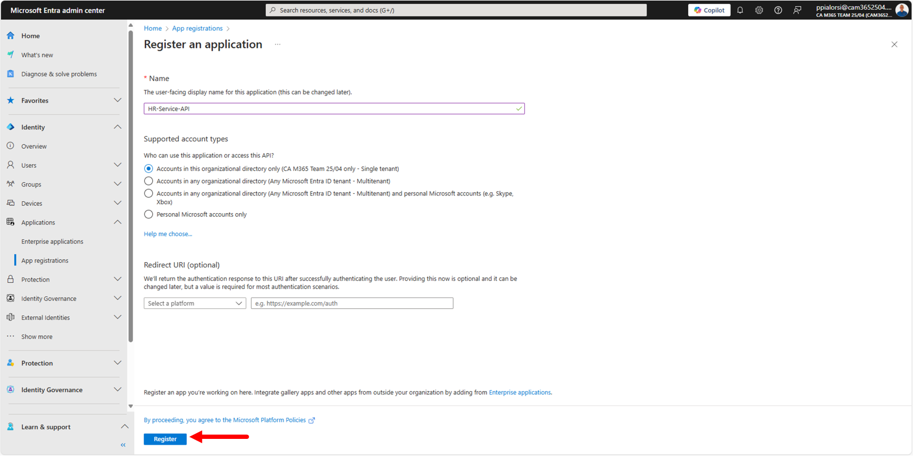
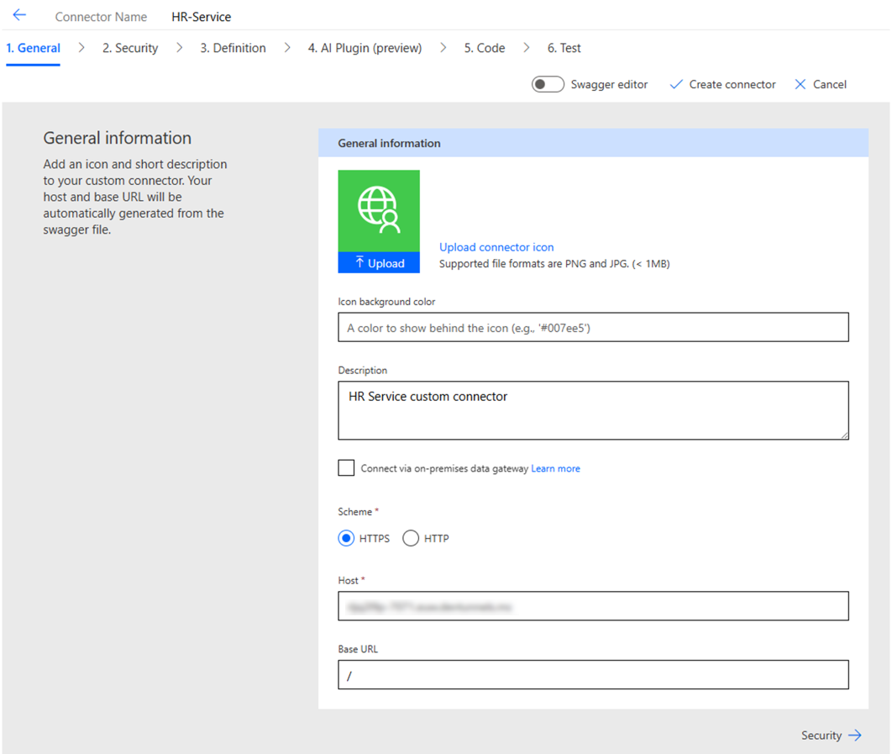
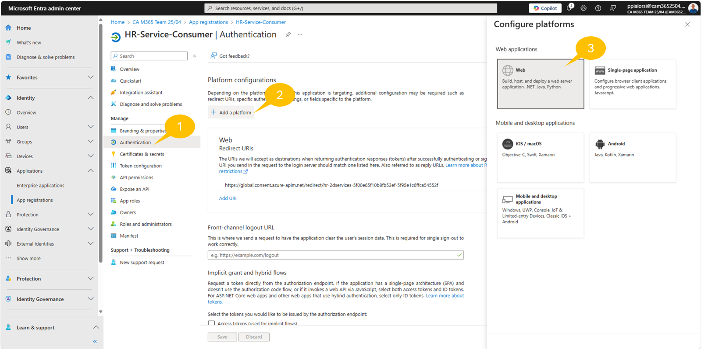
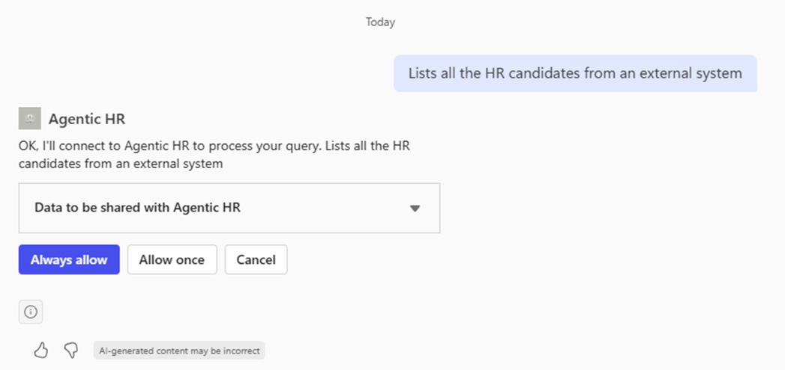
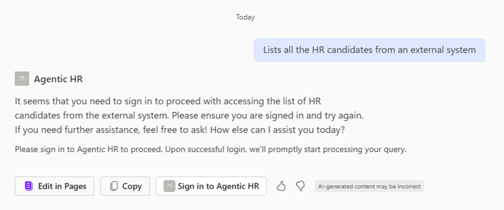
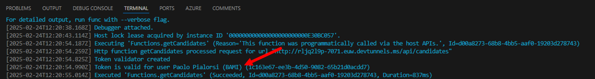

ラボ MCS5 - Power Platform カスタム コネクター
このラボでは、Microsoft Copilot Studio で作成した エージェント を Power Platform のカスタム コネクターを使って拡張する方法を理解します。具体的には、架空の求人候補者リストを管理するカスタム REST API を利用します。この API では次の機能を提供します。
- 候補者の一覧取得
- 特定の候補者の取得
- 新しい候補者の追加
- 候補者の削除
Microsoft Copilot Studio で エージェント を構築したい場合は、次の ラボ を実施してください
Microsoft 365 Copilot では、Copilot Studio 内でこれらの機能を利用し、前回の ラボ MCS4 で作成したカスタム エージェントの可能性をさらに高めることができます。
Note
このラボは前回の ラボ MCS4 を前提としています。同じ エージェント を引き続き使用し、新しい機能を追加して強化します。
このラボで学ぶこと:
- REST API を Power Platform のカスタム コネクターとして公開する方法
- Power Platform で外部 REST API との通信を保護する方法
- エージェント からカスタム コネクターを利用する方法
開始前の準備:
エクササイズ 1 : REST API の作成
このラボでは簡潔さを優先し、あらかじめ用意された REST API を使用します。このエクササイズでは API をダウンロードして構成し、ローカルで実行できるようにします。
ステップ 1: REST API のダウンロードとテスト
サンプル REST API は TypeScript と Node.js で構築された Azure Function で、名前は HR Service です。ソース コードは こちら からダウンロードできます。
zip を展開し、Visual Studio Code でフォルダーを開きます。次のスクリーンショットはプロジェクト構成の概要です。

主な構成要素:
http: REST API をテストする .http ファイルが含まれています。src/data/candidates.json: 初期データ ソースとして使用される候補者一覧の JSON ファイル。src/functions/candidatesFunction.ts: Azure Function の実装。src/openapi.json: JSON 形式の Open API 仕様。src/openapi.yaml: Yaml 形式の Open API 仕様。askCandidateData.json: 新規候補者追加用の Adaptive Card の JSON。dev-tunnel-steps.md: REST API をローカルで実行するためのリバース プロキシ (Dev Tunnel) を構築する手順。local.settings.json.sample: 後ほど使用するサンプル設定ファイル。
local.settings.json.sample を local.settings.json にリネームし、F5 キーでプロジェクトを開始します。
Visual Studio Code で http/ht-service.http を開き、http://localhost:7071/api/candidates の GET リクエスト横にある Send request コマンドを選択して候補者一覧取得リクエストを送信します。
画面右側にレスポンス ヘッダーと JSON 形式の候補者一覧が表示されます。

画面下部の Terminal ウィンドウには、実行した API 呼び出しのトレースと OAuth is disabled. Skipping token validation というメッセージが表示されます。現在は API が匿名でアクセス可能になっています。
ステップ 2: API を Entra ID に登録する
次に API へのアクセスを保護します。まずブラウザーを開き、対象 Microsoft 365 テナントの職場アカウントで https://entra.microsoft.com にアクセスし、Microsoft Entra 管理センターにサインインします。要求された場合は認証してください。その後 1️⃣ 左メニューの App registrations を選択し、2️⃣ + New registration を選択して新しいアプリケーションを登録します。

Register an application ページが表示されます。アプリケーション名に HR-Service-API などを入力し、対象テナントのみで認証を許可します。画面下部の Register を選択します。

Microsoft Entra によりアプリケーションが登録され、Overview ページにクライアント ID とテナント ID が表示されます。これらは後ほど使用するのでコピーしておいてください。
左メニューの 1️⃣ Expose an API を選択し、2️⃣ + Add a scope を選択してカスタム API の新しいアクセス許可スコープを追加します。初回追加時には Application ID URI を設定する必要があります。既定値は api://<Client-Id> です。Save and continue を選択して保存します。続いて 3️⃣ 右側のパネルでスコープを設定し、4️⃣ Add scope を選択して確定します。
スコープを作成すると、API を利用する際に必要となるカスタム委任アクセス許可を定義できます。API の利用者は、そのスコープを含む OAuth 2.0 トークンを提供する必要があります。

設定例:
- Scope name: 例
HR.Consume - Who can consent?:
Admins and users - Admin consent display name:
HR.Consume - Admin consent description:
Allows consuming the HR Service - User consent display name:
HR.Consume - User consent description:
Allows consuming the HR Service - State: Enabled
設定後、新しいスコープが一覧に表示されます。

次に 1️⃣ Manifest を選択し、2️⃣ Microsoft Graph App Manifest (new) エディターを使用して 3️⃣ requestedAccessTokenVersion を 2 に更新します。これにより API が v2.0 タイプの JWT トークンを要求するよう指定されます。
Note
Microsoft Graph App Manifest と v2.0 トークンについての詳細は Understand the app manifest (Microsoft Graph format) を参照してください。

次に Visual Studio Code に戻り、local.settings.json を先ほど登録したアプリケーションの設定に合わせて構成します。<Client-ID> と <Tenant-ID> を実際の値に置き換え、UseOAuth プロパティを true に設定します。
{
"IsEncrypted": false,
"Values": {
"AzureWebJobsStorage": "UseDevelopmentStorage=true",
"FUNCTIONS_WORKER_RUNTIME": "node",
"AAD_APP_CLIENT_ID": "<Client-ID>",
"AAD_APP_TENANT_ID": "<Tenant-ID>",
"AAD_APP_OAUTH_AUTHORITY": "https://login.microsoftonline.com/<Tenant-ID>",
"UseOAuth": "true"
}
}
REST API プロジェクトを再起動すると、API が保護され、Authorization ヘッダー内の OAuth 2.0 トークンを要求するようになります。トークンがない場合、または無効な場合、API は HTTP ステータス 401 (Unauthorized) を返します。
ステップ 3: Dev Tunnel の構成
次に REST API をパブリック URL で公開する必要があります。ローカル環境で API を実行しているため、localhost を公開 URL にマッピングするリバース プロキシ ツールが必要です。ここでは Microsoft 提供の dev tunnel を使用します。手順は以下のとおりです。
- こちらの手順 に沿って dev tunnel をインストールします。
- 次のコマンドを実行して dev tunnel にログインします。
devtunnel user login
- 次のコマンドを実行して dev tunnel をホストします。
devtunnel create hr-service -a --host-header unchanged
devtunnel port create hr-service -p 7071
devtunnel host hr-service
コマンドラインに接続情報が表示されます。

「Connect via browser」の URL をコピーして保存してください。
ラボの演習中は dev tunnel のコマンドを実行したままにしておきます。再起動が必要な場合は devtunnel host hr-service を再実行してください。
ステップ 4: Consumer の Entra ID 登録
Power Platform のカスタム コネクターから API を利用するには、Microsoft Entra ID に Consumer アプリケーションを登録する必要があります。Microsoft Entra admin center に戻り、再度 App registrations を選択し、+ New registration を選択します。アプリケーション名に HR-Service-Consumer を入力し、単一テナント認証で登録します。
登録後、Overview ページでクライアント ID とテナント ID をコピーしておきます。

左メニューの 1️⃣ Certificates & Secrets を選択し、2️⃣ + New secret を選択します。3️⃣ 説明と有効期間を設定し、4️⃣ Add を選択してシークレットを作成します。生成されたシークレット値をクライアント ID とテナント ID と共に安全な場所へ保存してください。
続いて 1️⃣ API permissions を選択し、2️⃣ + Add a permission をクリック。右側のパネルで 3️⃣ APIs my organization uses を選択し、HR-Service-API を検索して 4️⃣ 選択します。

API を選択するとパネルが更新され、事前に設定した HR.Consume の委任アクセス許可を選択できます。Add permission をクリックして追加します。
追加後、Grand admin consent for ... を選択してアプリケーションにアクセス許可を付与します。

最終的に、Consumer アプリケーションには次のようにアクセス許可が設定されます。

このタブは、後続のステップで設定を更新するため開いたままにしておきます。
エクササイズ 2 : カスタム コネクターの作成
このエクササイズでは、HR Service API を利用する Power Platform カスタム コネクターを作成します。
ステップ 1: カスタム コネクターの作成
ブラウザーで https://make.powerautomate.com にアクセスし、職場アカウントでサインインします。まず右上の環境セレクターで Copilot Dev Camp 環境に切り替えます。次に左側メニューで More→Discover all→Custom connectors を選択します。頻繁に使用する場合はメニューにピン留めしておくと便利です。カスタム コネクター一覧ページで + New custom connector → Import an OpenAPI file を選択します。

コネクター名を入力し、HR-Service の OpenAPI JSON ファイルを指定します。ファイルは こちら でも取得できます。入力後 Continue を選択します。

マルチタブの登録プロセスが表示されます。最初の General タブではアイコンや色、説明を設定できます。また Host にはエクササイズ 1 - ステップ 3 でコピーした dev tunnel のホスト名を入力し、Base URL は既定値 / のままとします。

ページ下部の Security を選択して Security タブへ移動し、認証タイプに OAuth 2.0 を選択、プロバイダーとして Azure Active Directory を選択します。

OAuth 2.0 と Azure Active Directory を選択すると、必要な設定入力欄が表示されます。
- Client ID: エクササイズ 1 - ステップ 4 で登録した Consumer アプリの
<Client-Id> - Client secret: 同 Consumer アプリの
<Client-Secret> - Authorization URL: 既定の Entra ID 認証 URL
- Tenant ID: Consumer アプリの
<Tenant-Id> - Resource URL: エクササイズ 1 - ステップ 2 で設定した
<Application-ID-URI>(例api://<Client-Id>、ここでの<Client-Id>はHR-Service-APIのもの) - Enable on-behalf-of login:
False - Scope:
HR.Consume - Redirect URL: 読み取り専用 (後ほど使用)

右上の Create connector をクリックして保存します。保存後 Security タブが再読み込みされ、Redirect URL の値が確定表示されます。その値をコピーし、Microsoft Entra 管理センターに戻ります。エクササイズ 1 - ステップ 4 で登録した Consumer アプリで 1️⃣ Authentication を選択し、2️⃣ + Add a platform をクリック。右側パネルで 3️⃣ Web を選択し、4️⃣ 先ほどコピーした Redirect URL を貼り付け、5️⃣ Configure をクリックします。

これで Power Platform からの認証フローでリダイレクト URL が使用できるようになりました。

カスタム コネクター定義に戻り、Definition タブへ進みます。ここには OpenAPI 仕様から取得した API の操作が一覧表示されます。変更は不要です。必要に応じて Test タブを開き、API が正しく動作するかテストできます。
ステップ 2: カスタム コネクターのテスト
Test タブ左側に操作一覧が表示されます。例えば getCandidates を選択し、+ New connection をクリックして接続を作成し、Power Platform の指示に従って認証します。接続が作成されたら Test operation を選択し、画面下部にレスポンスを確認します。

エクササイズ 3 : カスタム コネクターの利用
このエクササイズでは、エクササイズ 2 で作成したカスタム コネクターを利用します。
ステップ 1: エージェントからカスタム コネクターを利用する
ここでは、ラボ MCS4 で作成した Microsoft 365 Copilot Chat 用 エージェント でカスタム コネクターを使用します。
ブラウザーで https://copilotstudio.microsoft.com にアクセスして Copilot Studio を開きます。
1️⃣ Agents 一覧から 2️⃣ Microsoft 365 Copilot という名前の エージェント を選択します。

Agentic HR エージェントを編集し、Actions セクションで + Add action を選択します。ラボ MCS4 - エクササイズ 2 - ステップ 1 と同様の手順に従いますが、今回は Custom connector を選択し HR-Services を検索します。エクササイズ 2 - ステップ 1 で作成した HR-Services コネクターのアクションが表示されます。
Get all candidates アクションを選択し、カスタム コネクターへの接続を確認します。
アクションを以下のように設定します。
- Name:
Get all candidates - Description:
Lists all the HR candidates from an external system - Authentication:
User authentication
Add action をクリックして追加します。追加後、ラボ MCS4 - エクササイズ 2 - ステップ 1 で作成した旧アクションを無効化します。無効化するには、アクション横の三点リーダー (...) をクリックし、Status を Off に切り替えます。

エージェントを発行し、更新が完了したら Microsoft 365 Copilot Chat で次のプロンプトを入力して新しいアクションをテストします。
Lists all the HR candidates from an external system
Microsoft 365 Copilot Chat から外部 REST API の利用許可を求められます。複数回テストする場合は Allow once、常に許可する場合は Always allow を選択してください。

続いて Microsoft 365 Copilot Chat が外部 REST API へ安全にアクセスするためサインインを求めます。

Sign in to Agentic HR を選択して認証を行い、カスタム コネクターへ接続します。接続後、再度同じプロンプトを実行すると、HR Service プロジェクトに定義された候補者一覧が表示され、レスポンス下部に外部サービスからの応答であることを示すアイコンが表示されます。

最後に Visual Studio Code の Terminal ウィンドウを確認すると、API が処理した REST リクエストのトレースが表示されています。Token is valid for user <username> というメッセージがあり、Microsoft 365 Copilot からのリクエストがユーザーとして認証されたことがわかります。

素晴らしいですね！カスタム コネクターを構成し、Microsoft 365 Copilot Chat 内で利用できました。
おめでとうございます！
ラボ MCS5 - Power Platform カスタム コネクターを完了しました！
こちらから ラボ MCS6 を開始し、Copilot Studio で MCP サーバーを利用する方法を学びましょう。